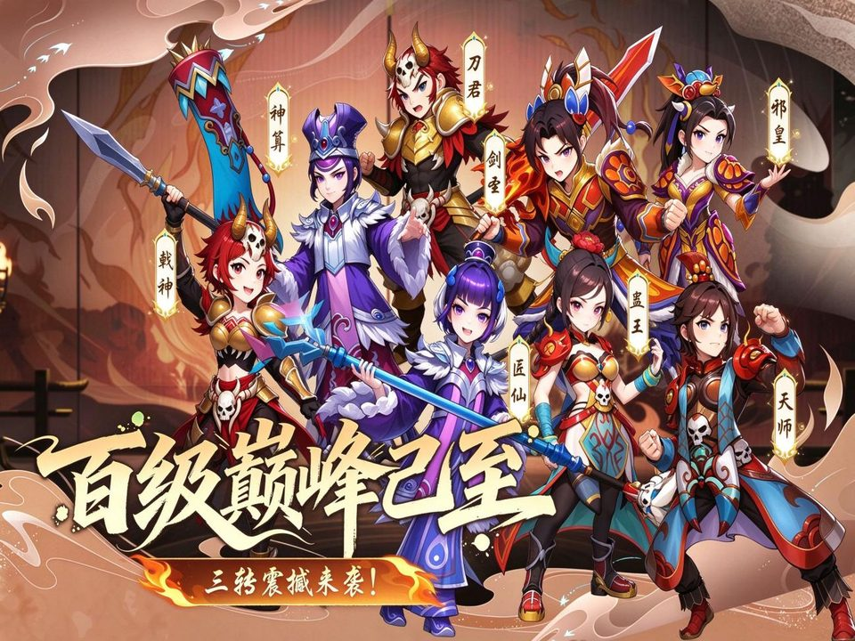
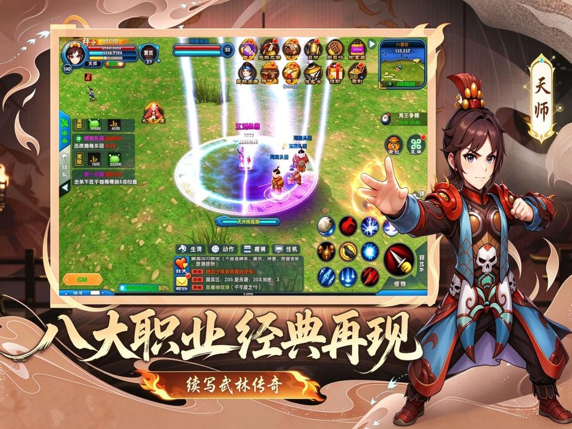
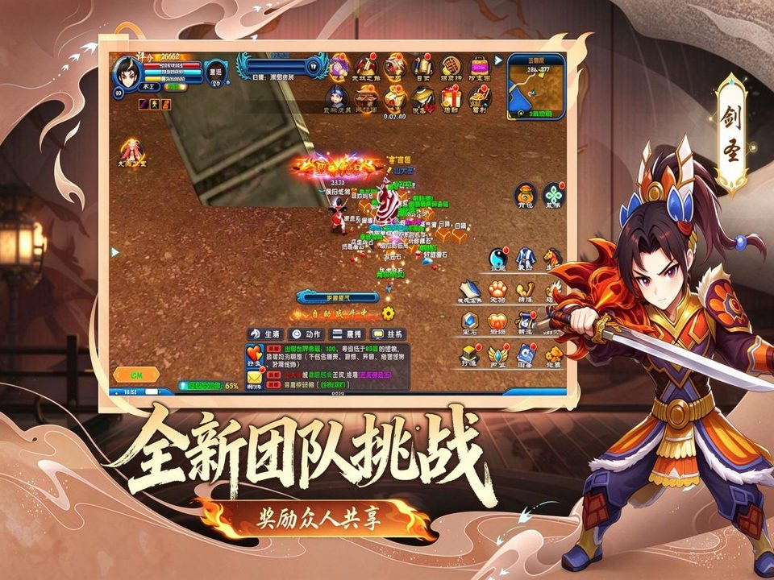
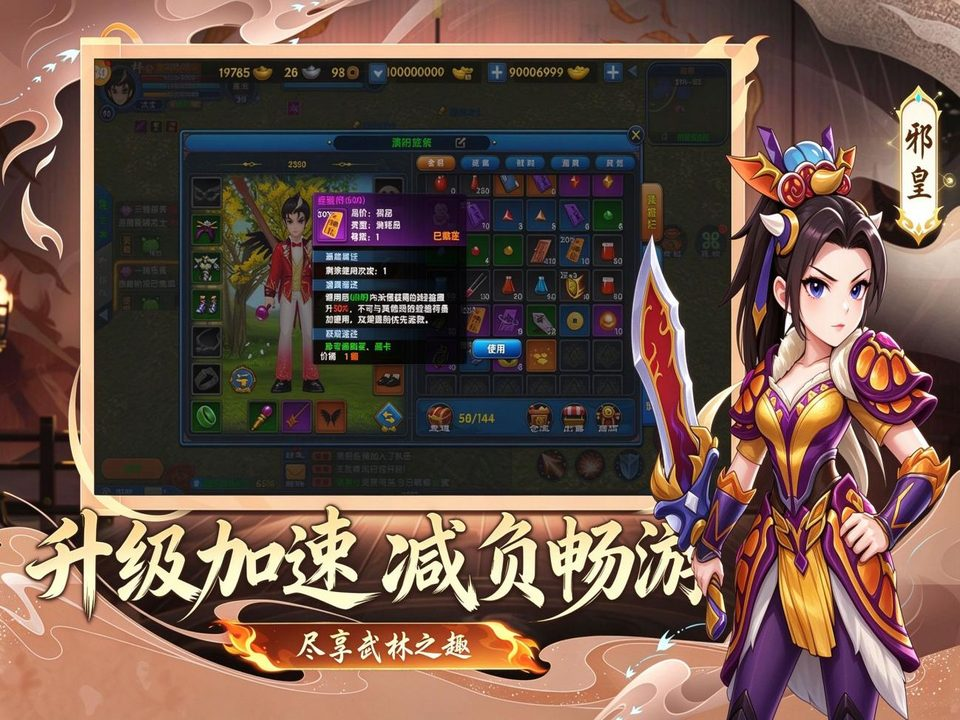
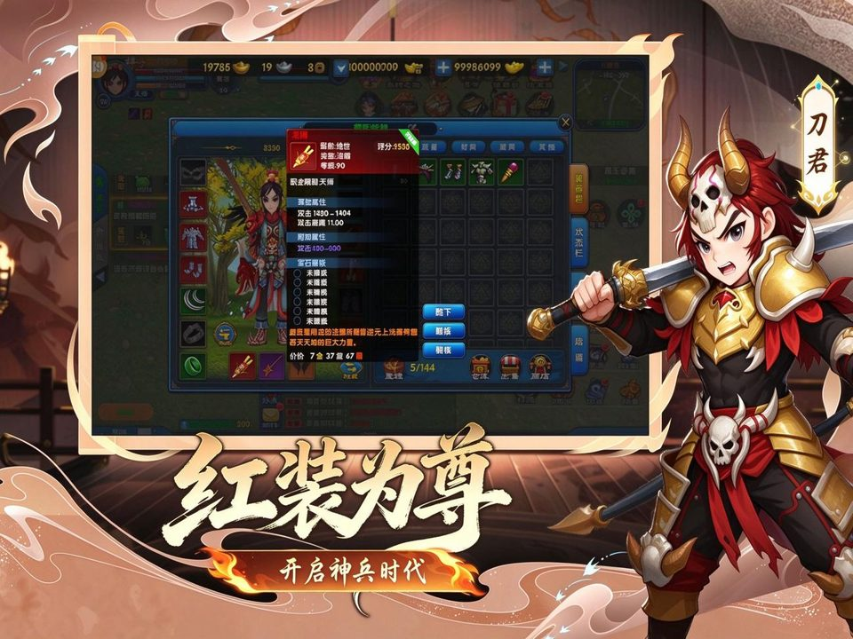

武林外传十年之约绿色版新手开荒全攻略：职业转职、日常与副本时间表、搬砖变现

本攻略面向公测与「绿色版」入坑 / 回坑玩家，把「选什么职业、每天几点做什么、副本掉什么、怎么搬砖变现」讲透。游戏持续更新，所有时间、次数、数值以游戏内为准。
一、开局须知
1.1 游戏与「绿色版」是什么
《武林外传：十年之约》是正版 IP 授权的 3D 武侠 MMORPG 手游，故事发生在「七侠镇」，主打经典还原、怀旧社交。手游于 2025 年 8 月公测，2026 年 9 月 8 日又开了主打「绿色公平」的新服版本「绿色版」（不删档、无需激活码、安卓与 iOS 双端）。
所谓「绿色」规则（这一版的核心卖点）：
- 取消「点数商城」，官方商城只卖外观时装和少数功能道具，不直接卖数值成长。
- 移除装备强化失败降级 / 碎装，改温和强化体系，强化不再一朝回到解放前。
- 装备与道具主要靠副本掉落 + 任务 + 生活技能产出，官方「逼氪」点减少。
- 保留七侠镇摆摊、帮派战、京城战场、轻功 等经典玩法，PVP / PVE 同步开放。
一句话：这是「低氪也能玩、靠刷靠搬砖也能成型」的怀旧向版本，适合慢玩养老，但交易与养成仍有门槛（见第六章）。
1.2 从哪下、进哪个服
- 只用官方渠道下载：iOS 走 App Store。搜索里那一堆「官网 / 官方下载」多是买量引流站，别在里面注册或充值（见第八章避坑）。
- 尽量进新服 / 活跃服：本作开服较快，选刚开不久、人多的服务器，日常与世界 BOSS 才热闹、物价也更划算。
可直接复制下面链接进入下载页面，或直接扫二维码：
- 安卓：https://sdkn-ldy.zhangyu39.com/?app_id=7669&promote_id=1778
- 苹果：https://sdkn-ldy.zhangyu39.com/?app_id=7672&promote_id=1778
手机扫上面二维码可直接进对应平台的下载页；文末也有下载卡片。
二、职业与转职（先选对，少走半年弯路）
本作沿用经典武林外传职业树：初始都是「菜鸟」，靠换兵器 / 转职确定流派。成长链是：
菜鸟 → 一转（游侠 / 散人 两大流派）→ 二转（枪豪·剑客 / 术士·医师）→ 三转（八大进阶分支）
2.1 四大核心职业定位
| 职业 | 定位 | 特点 | 上手 / 适合 |
|---|---|---|---|
| 枪豪 | 全能坦克 · 前排 | 高血高防、稳定输出、能拉能扛 | 难度低，新手 / 零氪首选 |
| 剑客 | 近战爆发 · 单挑 | 高暴击高闪、收割强，但身板薄 | 难度较高，吃操作 / PVP 党 |
| 术士 | 远程群法 · 练级 | AOE 最大、刷图升级最快，脆 | 难度中，搬砖 / 冲级向 |
| 医师 | 唯一辅助 · 续航 | 回血 / 增益 / 护盾，副本与团战刚需 | 操作简单，组队秒进本 |
（一转的游侠 = 近战基础、走枪豪 / 剑客线；散人 = 远程基础、走术士 / 医师线。三转进阶分支：枪豪→刀君 / 戟神，剑客→剑圣 / 邪皇，术士→天师 / 蛊王，医师→医仙 / 神算。）

2.2 三转阶段加点方向（多源共识）
- 医师 / 医仙：主体质（生存第一位，别去点攻击）。
- 枪豪：主力量要输出更稳，或 力量 + 体质（如 8 力 2 体）更肉。
- 术士 / 天师：主智慧，练级打金效率最高。
- 剑客 / 邪皇：主敏捷，堆暴击闪避，PVP 最强。
通用原则：切忌平均加点，先把主属性拉起来再补次属性；前期转职 / 洗点成本低，选错能救。
2.3 直接给结论
- 新手 / 零氪 / 求稳：枪豪，其次医师（组队刚需、永远有人要）。
- 想快点升级 / 搬砖：术士（AOE 刷图第一）。
- 爱打架 / PVP：剑客。
- PVE 万能开荒阵：1 枪豪 + 1 医师 + 2 输出（剑客 / 术士），日常副本到高阶地宫都吃得开。
三、战斗体系：武功 · 气功 · 阵法 · 轻功
- 外功（招式）：当前兵器的主动技能，靠技能点升级；技能点由升级与任务获得。
- 内功 / 气功：被动与增益心法，决定流派硬度与流派特色，优先点核心增伤 / 减伤。
- 阵法：团队 / 站位相关的加成体系，组队下本前摆好阵。
- 轻功：保留自端游，可在七侠镇 / 京城飞檐走壁，赶路、走位、探索都用得上。
搭配思路：先定核心职业 → 点满流派关键技能 → 用属性点强化主属性。逐技能的具体点数网上版本差异大，以游戏内为准。
四、日常任务与副本时间表（核心）
下面把「每天做什么、什么时候、给什么」整理成表。时间 / 次数为多源玩家实测的常见值，具体以你所在服的游戏内公告为准。
4.1 每日必做任务
| 日常 | 解锁 | 次数 | 主要产出 |
|---|---|---|---|
| 武林悬赏 | 约 25 级 | 每日约 10 次 | 经验、绑定元宝、强化石、装备碎片 / 宝箱（优先接高品刷新） |
| 跑环 | 约 21 级 | 每日 1 轮 · 10 环 | 经验、金币、宝箱（七侠镇 NPC 燕小六接取） |
| 除暴安良 | 约 20–30 级 | 每日 2 轮 | 侠义值（换宝石）、经验、铜钱（建议组队、末环有加成） |
| 历练 | 日常 | 每日约 3 次 | 经验、铜钱、黑木令（破关的钥匙） |
| 破关 | 日常 | 每日约 5 次 | 大量经验、装备（40 级前耗黑木令，40 级后用玄铁令） |
| 科举答题 | 日常 | 限时 | 经验、银两、荣誉值（特定时段开放，看游戏内） |
| 帮派任务 | 约 16 级入帮 | 每日 | 帮贡（兑宝石）、大量经验 |
| 帮派传功 | 入帮 | 每日 1 次 | 海量经验（约 18:30–19:00 多人限时，务必参加） |
| 押镖 | 日常 | 每日 | 铜钱、元宝、经验（约 19:00–20:00 双倍时段，注意防劫） |
每日推荐顺序：悬赏 → 跑环 → 除暴 → 历练 → 破关 → 押镖 → 科举 → 帮派任务 + 传功，中间穿插副本，到点再打世界 BOSS / 幽灵船。
4.2 副本 / 秘境（打什么、掉什么）
| 副本 | 等级 | 次数 | 时段 | 掉落 / 产出 |
|---|---|---|---|---|
| 梦境七侠镇 | 约 20–35 | 每日 2 次 | 约 20:00–22:00 | 经验为主（「经验爆炸」）、绿蓝装、经验丹 |
| 同福密道 | 30 级 | 每日 3 次 | 全天 | 蓝装部件 / 首饰、紫装碎片（困难产紫装部件） |
| 地宫 | 约 30+ | 按次 | 全天 | 困难模式爆装备与强化石 |
| 五霸岗 | 40 级 | 每日 1 次 | 全天 | 试炼凭证 → 兑换蓝 / 紫首饰 |
| 烙印之塔 | 40 级 | 每日 1 次 | 全天 | 声望（兑紫装碎片）、高阶强化石、橙装碎片 |
| 太古皇陵 | 约 72 | — | — | 高阶饰品、技能秘籍（以游戏内为准） |
掉落只写产出类别；具体爆率、概率数字网上多为拼凑，一律以游戏内为准。

五、世界 BOSS 与跨服 / PVP 时间表
5.1 世界 / 野外 BOSS
- 世界 BOSS：常见中午 12:00 为主场，部分服另有晚间场；产出高阶 / 橙装与碎片、强化材料、稀有武学道具、排名奖励。
- 野外 BOSS：如嗜血熊、招财猪、修罗、山大王、摸金校尉等，刷新前多有全服公告；具体刷新点与规律以游戏内为准。
- 幽灵船（搬砖热点）：需 ≥ 54 级；每日 10:00–23:00 开放，BOSS 约 10:00 / 15:00 / 21:00 三波；产出可交易的「水晶头骨」与可交易材料——是零氪换元宝的核心去处。
5.2 跨服 / 帮派 PVP
| 玩法 | 门槛 / 时间 | 玩法与产出 |
|---|---|---|
| 黄金海岸 | 65 级 + 综合评分；每日 12:30–22:30 | 自由 PK 不涨善恶值；击杀得「海魂币」进专属商店兑稀有道具 / 法宝材料；每人每日首领归属有上限 |
| 江湖论剑 | ≥80 级；报名约 12–23 点、对战约每晚 20–22 点 | 组战队打对方 AI 镜像，海选 + 淘汰赛；奖励法宝、补天石、限定称号 / 坐骑（随赛季滚动） |
| 冰火争锋 | 帮派 ≥5 级，帮主 / 副帮主报名 | 赛季制；杀人、击杀战场首领、采资源攒积分；按档位 / 胜负 / 赛季排名发奖 |
| 领土战 | 6 人小队 × 多队；每周固定时段 | 抢「粮仓 / 主旗」，占粮仓持续加分；奖称号、限时坐骑、专属商店 |

以上 PVP 玩法的确切开放钟点随版本 / 赛季变化，进游戏看活动面板与公告为准。
六、搬砖与变现（讲透 + 泼盆冷水）
6.1 交易通道
- 摆摊：七侠镇 / 安全区固定点开摊、一口价，是官方保留的经典玩法。
- 拍卖行 / 交易行：主界面入口，挂单竞拍，分装备、宠物装备、材料、其他等类别（「交易行 / 拍卖行」多指同一系统）。
★关键门槛：想上架「出售」通常需要购买月卡 / 侠客令，未开通者往往「只能买不能卖」。所以绿色版「交易全自由」也要先迈这道槛——零氪纯浏览可以，真要靠搬砖换元宝，一般得先开月卡。
6.2 哪些能卖、哪些绑定
- 可交易（能上架）：蓝 / 紫 / 橙装备、宠物装备与宝箱、精炼石 / 强化石、黑木令 / 玄铁令（破关令牌）、魂晶 / 星屑 / 属性石 / 玄铁精魄、上品布料 / 图纸、采集物与药品、金条、大钱儿，以及幽灵船掉的可交易「水晶头骨」等。
- 不可交易：绑定物品、绑定元宝不能卖；金币 / 银两 / 铜钱等日常货币不能直接交易，需换成金条 / 元宝流通。
6.3 零氪搬砖闭环
- 产出：日常（悬赏 / 除暴 / 破关 / 历练 / 跑环）+ 副本（地宫 / 同福密道 / 梦境七侠镇）+ 世界 BOSS + 54 级后每天进幽灵船 + 生活技能采集 → 拿到「非绑定可交易物」。
- 变现：拍卖行挂单竞拍、或七侠镇摆摊一口价 → 收非绑定元宝 / 金条。
- 回流：元宝用于珍宝阁外观 / 功能消费、或补日常养成；金条回换游戏币。
生活技能（挖矿 / 采药 / 烹饪 / 裁缝 等）产出的强化材料与消耗品也能挂卖，是稳定但偏慢的搬砖线（具体技能与 NPC 以游戏内为准）。

6.4 关于「打金日入百万 / 稳定变现」——必须清醒
游戏内没有任何官方的「金币 / 元宝 → 人民币」提现出口，官方说的「自由变现」指的是游戏内价值流通（刷到的东西换元宝自用），不是让你提现。
- 「日入百万金币」「单号稳定变现」「散人打金养老服」是买量话术，把游戏内价值偷换成人民币。
- 真正「换钱」只能靠线下私下交易——这类行为违反用户协议，随时可能封号、没收、数据清零，且是诈骗高发区（买金被找回、假「第三方担保」）。
负责任建议：把搬砖当成「省充值、自给自足」的手段，别以赚钱为目的；要交易只在游戏内拍卖 / 摆摊走，坚决不碰线下资金往来。
七、新手 1 → 60 级升级路线
总原则：限时活动 > 日常任务 > 主线 / 支线 > 补级副本。主线是前期经验主来源、顺带解锁各系统，绿色版也宣称优化了前期卡级。
| 阶段 | 怎么练 |
|---|---|
| 1–17 级 | 无脑推主线、顺路清支线；约 17 级解锁「武林之路」引导与永久经验加成类奖励。 |
| 17–30 级 | 日常全开：悬赏（选高品）→ 跑环 → 除暴安良（组队）→ 历练（攒黑木令）→ 押镖；副本接上地宫（约 30 级，困难爆装）。同步准备二转材料。 |
| 30–40 级 | 破关（用黑木令）+ 同福密道 + 梦境七侠镇（经验爆炸）+ 科举答题 + 帮派任务与传功；完成二转、确定主属性方向。 |
| 40–60 级 | 破关改用玄铁令；持续世界 BOSS、地宫、帮派玩法；到 54 级后每天进幽灵船（搬砖 + 补级双赢）；40 级后进入装备精炼 / 强化阶段。 |
卡级怎么破
主线断档时，按「除暴 / 悬赏 / 跑环 / 组队挂机」顺序补；用好经验符、双倍时段与离线经验，副本组队有额外加成。挂机时选「怪物等级略高于角色」的点，效率与经验更优。
八、入坑避坑清单
- 下载只认官方：TapTap 官方页 / App Store。搜到的「wlwz2026.cn」「某某官网」等大多是买量落地站，别在其中输账号密码或充值。
- 别为「搬砖赚钱」上头：见第六章——无官方人民币出口，线下换钱 = 封号 + 诈骗风险。
- 月卡门槛要算账：想开拍卖行 / 摆摊出售需月卡 / 侠客令，纯零氪只能买不能卖；先想清楚自己是要「玩」还是要「搬」。
- 兑换码别轻信：官方通稿并未发布可核验的通用兑换码；网上流传的码多是第三方搬运、随时可能失效（见第九章）。
- 数值以游戏内为准：一切「精确爆率 / 经验 / 兑换比 / 副本星期」多为洗稿，参考即可，别当标准答案。
九、兑换码
官方渠道目前没有发布可核验的通用兑换码。网上流传的多为第三方站搬运，未经实测、可能已过期，且常要你先关注 / 加群才给「最新码」——别为领码加陌生微信或付款。以下仅供「死马当活马医」地试试（一般在主城 / 福利界面兑换）：
| 流传码 | 标注奖励 | 备注 |
|---|---|---|
| WLWZ8888 | 绑定元宝 ×200、精炼石 ×10、替身娃娃 ×5 | 两站均出现，相对流传广 |
| YXWLWZ88 | 绑定元宝 ×200、精炼石 ×10、替身娃娃 ×5 | 同上，未实测 |
| WLWZSNZY | 绑定金钱、经验符（20%）、精炼石 ×2 | 未实测 |
| WLWZ1111 | 随意门 ×10、初级精力丹 ×2、替身娃娃 ×2 | 未实测 |
| WLWZ2026 | 银票 ×888、玄铁 ×50 | 「年份码」，多称上半年后易失效 |
想要真福利，看游戏内活动、签到、开服邮件和 TapTap / 官方社区公告更实在。
十、新手常问
Q：选什么职业开局？
A：求稳 / 零氪选枪豪，喜欢组队秒进本选医师，想快升级搬砖选术士，爱单挑 PVP 选剑客。
Q：绿色版真的不用氪吗？
A：比官服版友好（不卖数值、强化不碎装），但「上架出售」要月卡门槛，纯零氪能玩、能买不能卖。
Q：一天下来最该做啥？
A：悬赏 → 跑环 → 除暴 → 历练 → 破关 → 押镖 → 科举 → 帮派任务 + 传功，到点世界 BOSS；54 级以上幽灵船别落下。
Q：靠搬砖能赚钱吗？
A：能省充值、自给自足，但别指望变现换人民币——没有官方人民币出口，线下换钱是违规 + 高风险。
Q：要哪些兑换码？
A：没有官方码可核验，第三方码试试就好，别为领码进群付款。

祝各位少侠、阁主同福重聚，江湖再会！